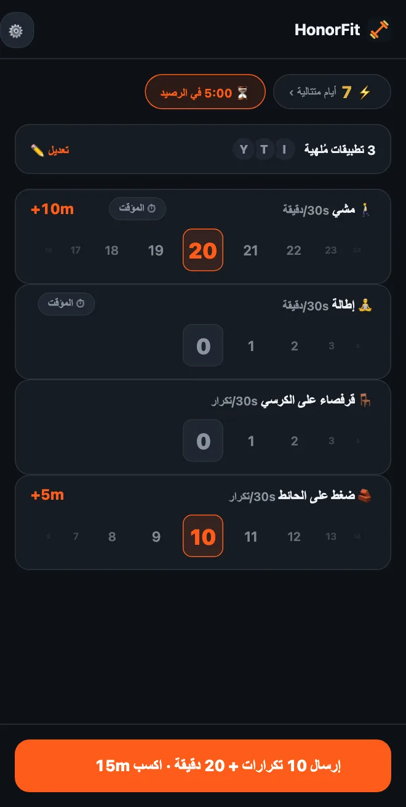

لا تستطيع عمل تمارين الضغط؟ تمارين خفيفة لفتح تطبيقاتك
أهلًا بالجميع! يُعرف HonorFit غالبًا بأنه حاجب تطبيقات بتمارين الضغط (بالإنجليزية): تبقى تطبيقاتك مقفلة حتى تؤدي بعض التكرارات وتسجّلها بنفسك. لكن إذا كانت معصماك أو كتفاك أو ركبتاك لا تحب ذلك، أو كنت على مكتب طوال اليوم، أو ببساطة تمارين الضغط ليست واردة الآن، فلا بأس أبدًا.
لم تكن تمارين الضغط هي الهدف بالنسبة لي أصلًا. الهدف مطبّ صغير بينك وبين التصفح، ويحدث أنه مفيد لك. ومشية حول الحي تؤدي الغرض نفسه تمامًا. إليك كيف تضبط HonorFit حول أشياء تستطيع فعلها حقًا.
ابدأ بالموجود
يأتي التطبيق بأربعة تمارين: الضغط، والبطن، والعقلة، والقرفصاء. أخفّها القرفصاء، وكل واحدة بـ 30 ثانية.
وبما أنه نظام الشرف (بالإنجليزية)، فلا أحد يتحقق من شكل القرفصاء. إذا كانت القرفصاء الكاملة صعبة عليك، فالوقوف من الكرسي والجلوس مجددًا يُحسب. والفكرة نفسها مع الضغط على الحائط أو على طاولة المطبخ. أنت تقرر ما هو التكرار، وتسجّله بصدق فحسب.
اختر تمارينك (مجانًا حتى 3)
بدءًا من الإصدار 1.15.0، يمكنك إعادة تسمية التمارين وحذفها، وتحديد ما يمنحه كل منها، وإضافة حتى 3 تمارين خاصة بك، كل ذلك مجانًا. أما Pro (3 دولارات شهريًا أو 19.99 دولارًا مرة واحدة في الولايات المتحدة؛ يعرض لك المتجر السعر المحلي) فيتيح لك إضافة ما تشاء. تصل إليه من الترس في الشاشة الرئيسية، ثم بطاقة التمارين. كتبت كل خطوة في المحرر هنا. هذه أنواع الأشياء التي أنظر إليها.
تمارين بالوقت (تُسجَّل بالدقائق)
حوّل أي تمرين إلى دقائق، أو اضغط على أحد الاقتراحات التي بجانبها ⏱. المناسبة هنا:
- 🚶 المشي. المفضل عندي لهذا. ربما أسهل مكسب على الإطلاق.
- 🧘 اليوغا أو 🤸 البيلاتس، أو أضف تمرينًا اسمه إطالة إذا كان هذا أقرب لما تفعله.
- 🏊 السباحة و🚴 ركوب الدراجة، وكلاهما لطيف على المفاصل.
- 🪷 التأمل. ليس رياضة، لكنه موجود، وعشر دقائق من الهدوء مقابل عشر دقائق على تيك توك صفقة جيدة جدًا.
التمارين بالوقت تبدأ بـ 30 ثانية من وقت التطبيقات لكل دقيقة، فمشية 20 دقيقة تمنحك 10 دقائق. العجلة تعدّ دقائق كاملة، حتى 100 في المرة.
حركات تناسب المكتب (تُسجَّل بالتكرارات)
اضغط ＋ إضافة تمرين واكتب اسمًا. بعض الحركات التي تنجح في المكتب أو في شقة صغيرة، بلا معدات:
- القرفصاء على الكرسي (الجلوس والوقوف): قم من كرسيك، ثم اجلس مجددًا.
- الضغط على الحائط أو الضغط على المكتب: تمارين ضغط على حائط أو مكتب متين. كلما كان السطح أعلى، كان أسهل.
- رفع الكعبين: ارتفع على أطراف أصابعك، ثم انزل. يمكنك عملها وأنت تنتظر المايكرويف.
- المشي في المكان: اقتراح رفع الركبتين، لكن أبطأ. أعد تسميته إن شئت.
- جسر الأرداف وكيجل: هادئة، بلا معدات، ويمكنك عمل كيجل في اجتماع دون أن يعرف أحد. كتبت مقالة كاملة عنها.
تمارين الثبات (البلانك، الجلوس على الحائط)
بما أن عجلة الدقائق تعدّ دقائق كاملة، فبلانك من 20 ثانية لا يناسبها فعلًا. أنصح بترك تمارين الثبات على التكرارات وأن تقرر معنى التكرار، مثل «ثبات واحد لمدة 20 ثانية». البلانك والجلوس على الحائط كلاهما في الاقتراحات.
كم يجب أن يمنحك كل تمرين؟
التمارين الجديدة تبدأ بـ 30 ثانية للتكرار. يمكنك الزيادة أو النقص 5 ثوانٍ في كل مرة. بعض نقاط البداية:
| التمرين | يُحسب | يمنحك | مثلًا |
|---|---|---|---|
| 🚶 المشي | دقائق | 30 ث لكل دقيقة | مشية 20 دقيقة = 10 د |
| 🧘 إطالة | دقائق | 30 ث لكل دقيقة | 10 دقائق = 5 د |
| 🪑 القرفصاء على الكرسي | تكرارات | 30 ث لكل تكرار | 10 = 5 د |
| 🧱 الضغط على الحائط | تكرارات | 30 ث لكل تكرار | 10 = 5 د |
| رفع الكعبين | تكرارات | 10–15 ث لكل تكرار | 20 بـ 15 ث = 5 د |
| البلانك | تكرارات (تكرار = ثبات 20 ث) | دقيقة لكل تكرار | 3 مرات ثبات = 3 د |
هذه مجرد تقديراتي لما يبدو عادلًا. الرقم الصحيح هو الذي ستدفعه فعلًا بدل أن تتلاعب به. إذا كان المشي هو العادة التي تريد بناءها أكثر من غيرها، فاجعل قيمته أعلى، مثل دقيقة لكل دقيقة.

بعض الإعدادات لتنسخها
- يوم مكتب: القرفصاء على الكرسي، الضغط على الحائط، رفع الكعبين، المشي.
- لطيف: المشي، الإطالة، القرفصاء على الكرسي، الضغط على الحائط (هذا ما في الصورة أعلاه).
- هادئ: المشي، اليوغا، التأمل.
- شقة هادئة: جسر الأرداف، كيجل، القرفصاء على الكرسي، المشي.
أنصح بثلاثة أو أربعة، لأن كل تمرين يحصل على عجلته الخاصة في الشاشة الرئيسية. في النسخة المجانية، يمكنك الوصول إلى أربعة بإعادة تسمية التمارين المدمجة (القرفصاء إلى القرفصاء على الكرسي، والضغط إلى الضغط على الحائط) وإضافة الباقي كتمارينك الخاصة الثلاثة.
وإذا كانت لديك إصابة أو ألم أو حالة صحية، فاسأل طبيبك أو معالجًا فيزيائيًا عمّا يناسبك. أنا أصنع حاجب تطبيقات؛ لست الشخص الذي تسأله عن ركبتيك.
HonorFit Blocker حاجب تطبيقات مجاني لـ iPhone وAndroid. نظام الشرف، بلا كاميرا، ولا شيء يغادر هاتفك. التمارين بالوقت وحتى 3 تمارين خاصة مجانًا؛ وPro يجعلها بلا حدود. ليس للجميع، لكن ربما يعجب بعضكم!